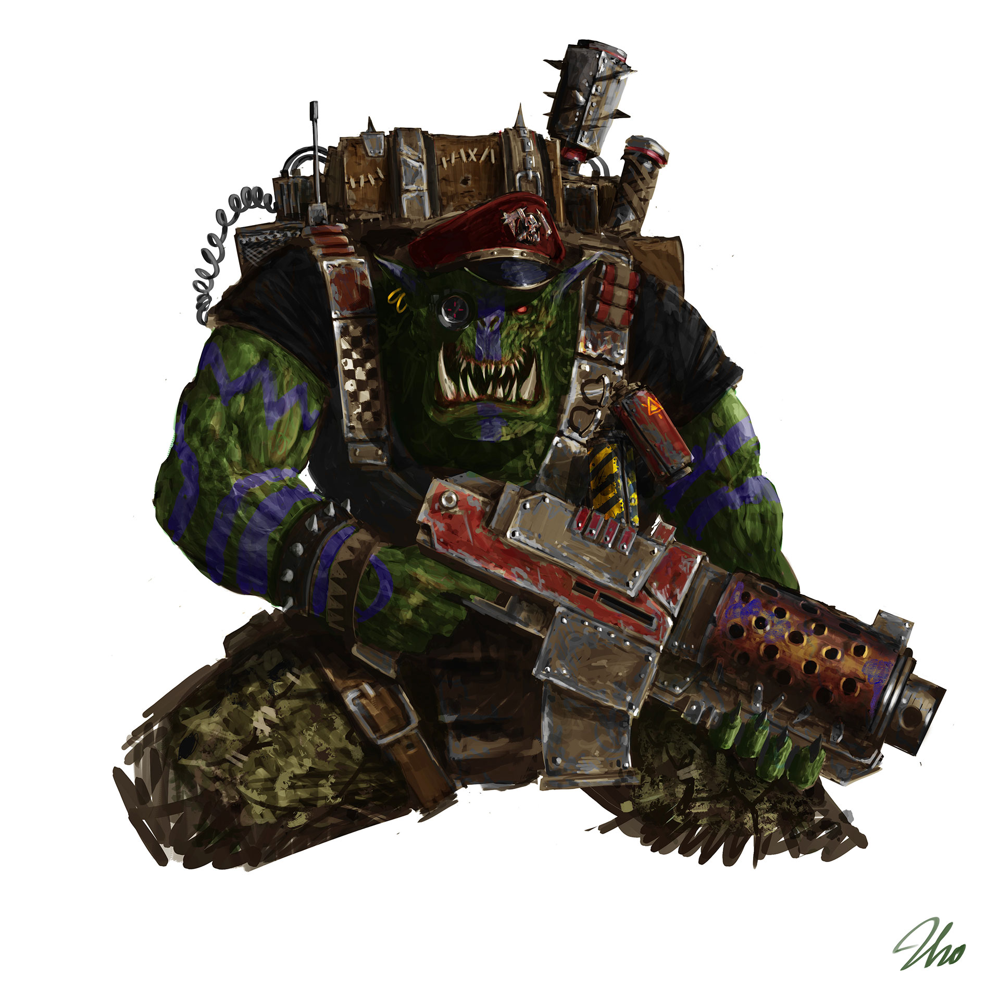
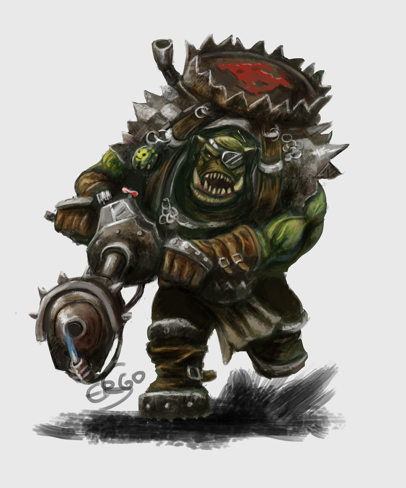
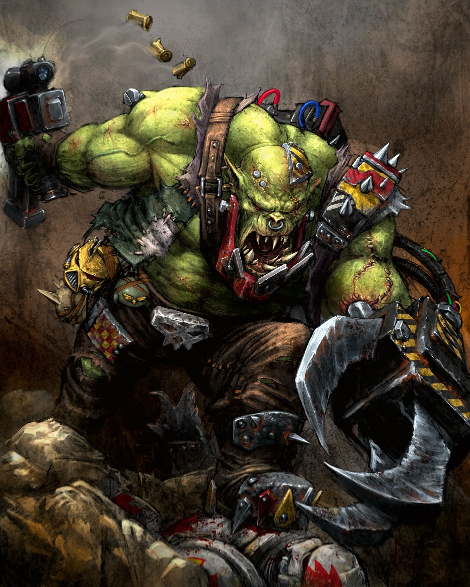
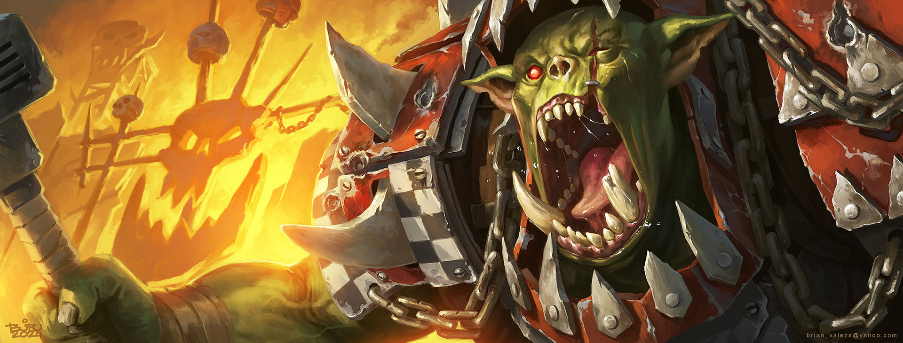
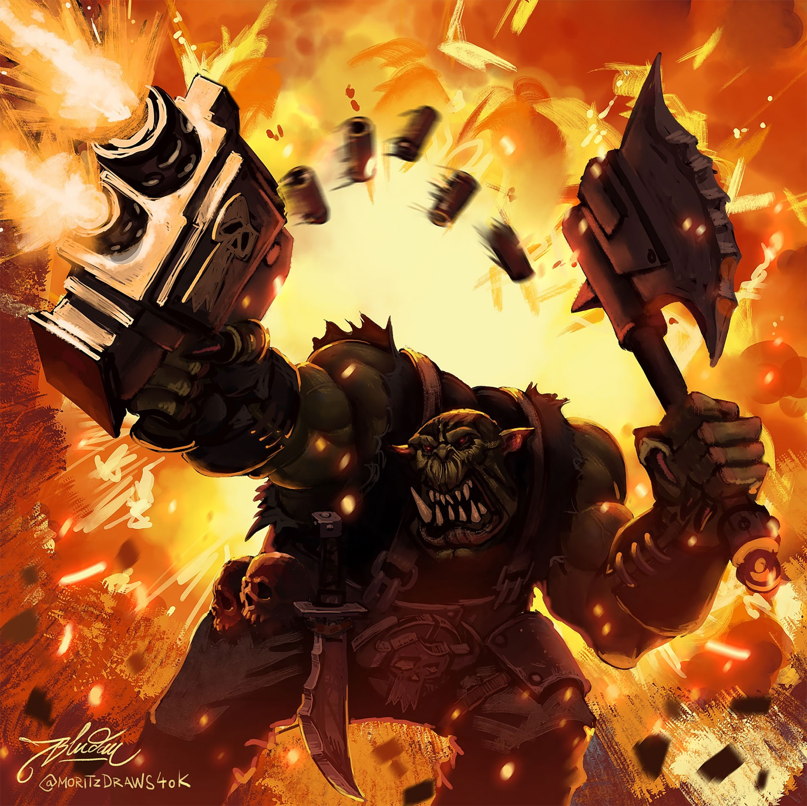
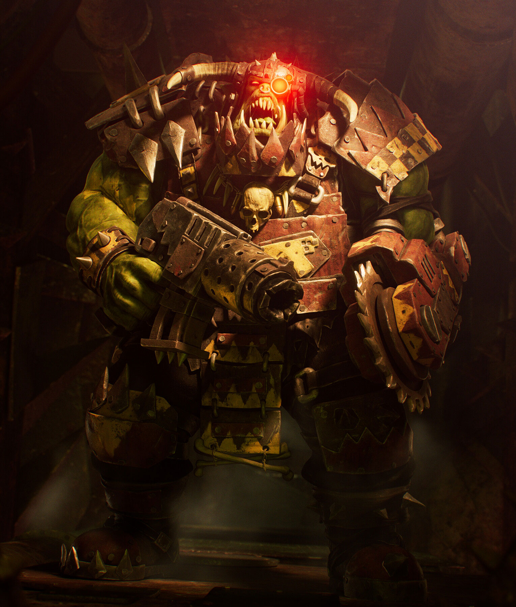
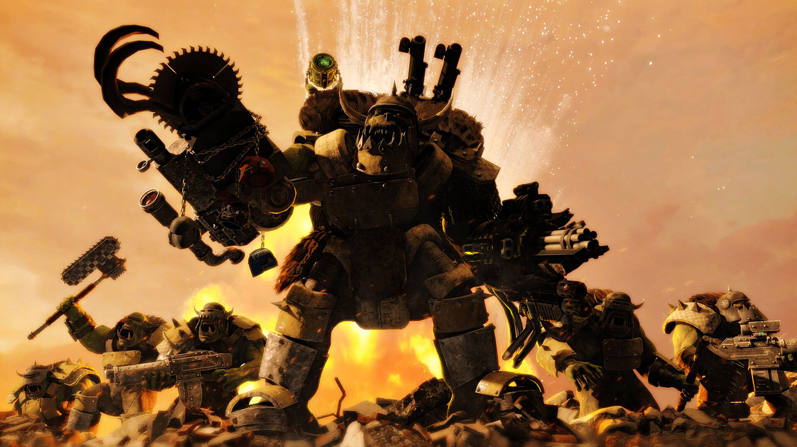
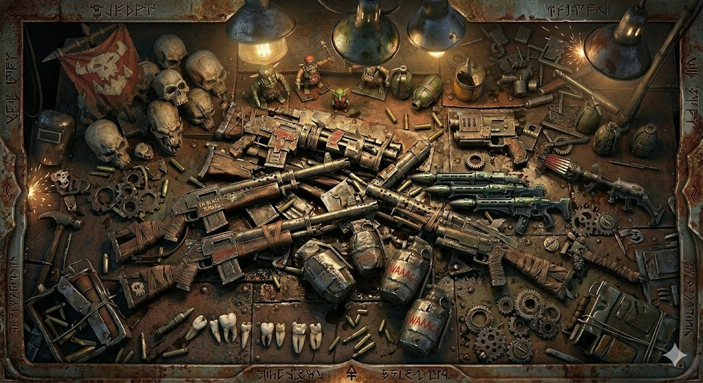
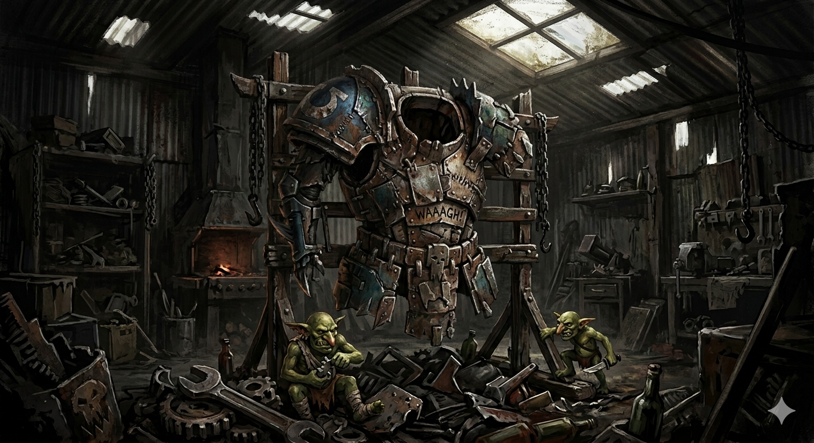

VAMOS QUEBRAR TUDO!
Os Orks são a raça mais belicosa da galáxia, uma praga biológica que vive apenas para a alegria da destruição. Eles não precisam de motivos complexos ou ideologias; para um Ork, a guerra é a sua própria recompensa. Nascidos de esporos e criados para o combate, eles se reúnem em massas colossais conhecidas como Waaagh!, uma mistura de cruzada religiosa e migração violenta. Sob o comando de feras como Ghazghkull Thraka, os Orks provam que não importa quão avançada seja a sua tecnologia — nada resiste a uma montanha de músculos verdes e um machado enferrujado.

Ork Boy

Nobz

Warboss

Deff Dread

Stormboyz

Gretchins
Ghazghkull Thraka

Meganobz

O armamento Ork, conhecido como Kustom Mega-Tools, desafia as leis da física e da lógica.
Construídas pelos 'Mekboyz' a partir de restos de tanques destruídos e metal retorcido, essas
armas funcionam principalmente porque os Orks acreditam que deveriam funcionar.
• Shootas e Big Dakka: Armas de fogo barulhentas que cospem uma quantidade
absurda de chumbo. Para um Ork, precisão não importa, desde que o barulho seja alto e o inimigo
caia.
• Choppas e Garras Hidráulicas: Lâminas brutas e serrilhadas que dependem
da força bruta do portador. As Power Klaws, como a de Ghazghkull, são capazes de partir um
tanque Imperial ao meio como se fosse papel.
• Tecnologia Instável: De canhões que disparam esferas de energia incerta a
foguetes amarrados com fita adesiva, o arsenal Ork é tão perigoso para o usuário quanto para o
alvo, mas o dano causado é sempre catastrófico.

A armadura de um Ork é uma colagem caótica de placas de aço rebitadas, grades
de ventilação e qualquer pedaço de metal pesado que eles encontrem no campo de batalha.
Frequentemente pintadas de vermelho (porque 'os vermelhos correm mais') ou azul (para dar
sorte), essas proteções são desengonçadas e pesadas.
No entanto, a verdadeira defesa de um Ork é sua fisiologia alienígena incrivelmente resiliente.
Eles podem sobreviver a ferimentos que matariam qualquer outra raça, e seus 'Painboyz' são
conhecidos por costurar membros decepados (às vezes trocando-os por próteses de metal bruto)
enquanto o Ork ainda está gritando por mais briga. A armadura não é para segurança; é para
garantir que o Ork chegue perto o suficiente para esmagar o oponente.